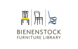
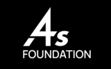

Impact & Recognition
Built Along the Way
A decade of building products, shaping teams, and contributing to the design community through collaboration, mentorship, and industry recognition.
10+
Years Experience
40+
Products Shipped
50M+
Users Impacted

